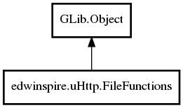

FileFunctions
Object Hierarchy:

Description:
public class FileFunctions : Object
Basic functions for reading and writing files.
Namespace: edwinspire.uHttp
Package: libspire_uhttp
Content:
Properties:
Creation methods:
Methods:
- public
bool create_if_does_not_exist (uint8[] data = data)
Create the file if it does not exist with the data passed as a
parameter.
- public
long create_new_file (uint8[] data = data)
Create a new file with the data passed as a parameter.
- public
long write_file (uint8[] data = data)
Writes data to the file, replacing the previous.
- public
uint8[] read_file ()
Read binary data file.
- public BinaryData read_as_binarydata ()
- public
string load_only_valid_unichars ()
Read data from the file and returns them as a string with only valid
characters unichar.
Fields: